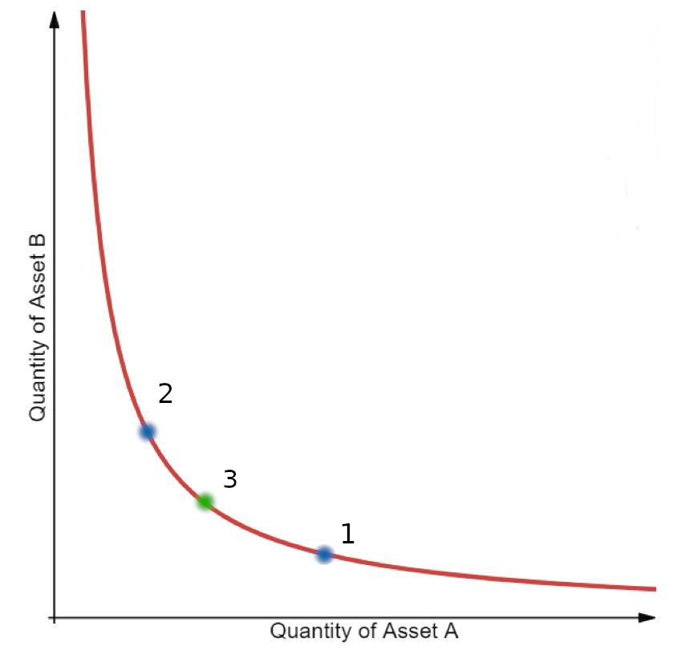

yAcademy OpenMEV review
Review Resources: Wiki Docs and whitepaper
Residents:
- Jackson
- engn33r
Table of Contents
- Review Summary
- Scope
- Code Evaluation Matrix
- Findings Explanation
- High Findings
- Medium Findings
- Low Findings
- Gas Savings Findings
- 1. Gas - Use
_isNonZero()for gas savings (engn33r) - 2. Gas - Use
_inc()instead of++and_dec()instead of--(engn33r) - 3. Gas - Bitshifting is cheaper than multiplication or division (engn33r)
- 4. Gas - Unnecessary zero initialization (engn33r)
- 5. Gas - Payable functions can save gas (engn33r)
- 6. Gas - Avoid && logic in require statements (engn33r)
- 7. Gas - Declare constant internal when possible (engn33r)
- 8. Gas - Replace require with errors in OpenMevRouter (Jackson)
- 9. Gas - Remove unused code (Jackson)
- 10. Gas - Use simple comparison (engn33r)
- 11. Gas - Combine reserve value checks (engn33r)
- 12. Gas - Use msg global vars directly (engn33r)
- 13. Gas - Remove duplicate internal function call (engn33r)
- 14. Gas - deadline special case not aligned with permit (engn33r)
- 15. Gas - Replace
pair.swap()with_asmSwap()(engn33r) - 16. Gas - Remove a sortTokens call (engn33r)
- 17. Gas - Missing curly brace (engn33r)
- 18. Gas - Reduce number of swaps (engn33r)
- 19. Gas - Revert if zero flashloan profit (engn33r)
- 1. Gas - Use
- Informational Findings
- 1. Informational - OpenMevRouter should inherit from IFlashBorrower and IOpenMevRouter (Jackson)
- 2. Informational - The ETHERSCAN_API key is present in plaintext (Jackson)
- 3. Informational - SafeTransferLib does not match Solmate’s main branch (Jackson)
- 4. Informational - Incorrect comment (engn33r, Jackson)
- 5. Informational - Replace magic numbers with constants (engn33r)
- 6. Informational - Typos (engn33r)
- 7. Informational - Hard coded Aave token list (engn33r)
- 8. Informational - Inconsistency in WETH transfers (engn33r)
- 9. Informational - safeApprove vulnerable to double withdraw (engn33r)
- 10. Informational - Same frontrunning weaknesses as Uniswap/SushiSwap (engn33r)
- 11. Informational - Kashi flashloanable tokens assumed same as aave (engn33r)
- 12. Informational - (engn33r)
- Final remarks
- About yAcademy
- Appendix and FAQ
Review Summary
OpenMEV
The purpose of OpenMEVRouter is to offer a drop-in replacement to a similar Uniswap/SushiSwap router. While enabling exchanges with UniSwap and SushiSwap, it also protects against direct MEV arbitrage (arb) between the two platforms by performing the arb within the DEX swap process. This leaves no arbitrage opportunities for MEV searches.
The main branch of the OpenMEV Repo was reviewed over 22 days, 4 of which were used to create an initial overview of the contract. The code review was performed between May 12 and June 3, 2022. The code was reviewed by 2 residents for a total of 59 man hours (engn33r: 34 hours, and Jackson 25 hours). The repository was under active development during the review, but the review was limited to one specific commit.
Scope
The commit reviewed was 8648277c0a89d0091f959948682543bdcf0c280b. The review covered the entire repository at this specific commit but focused on the contracts directory.
After the findings were presented to the OpenMEV team, fixes were made and included in several PRs.
The review was a time-limited review to provide rapid feedback on potential vulnerabilities. The review was not a full audit. The review did not explore all potential attack vectors or areas of vulnerability and may not have identified all potential issues.
yAcademy and the residents make no warranties regarding the security of the code and do not warrant that the code is free from defects. yAcademy and the residents do not represent nor imply to third parties that the code has been audited nor that the code is free from defects. Manifold and third parties should use the code at their own risk.
Code Evaluation Matrix
| Category | Mark | Description |
|---|---|---|
| Access Control | Good | The onlyOwner modifier was only applied to the harvest() function. Access controls existed on the relevant callback functions in OpenMevRouter.sol for flashloans. msg.sender is properly used so that the user cannot perform actions they should not be able to. Access controls are applied where needed. |
| Mathematics | Average | Solidity 0.8.13 is used, which provides overflow and underflow protect. There was no unusually complex math beyond the Uint512 library. The sqrt512() function using the Karatsuba Square Root method is an unusual and potentially custom implementation. |
| Complexity | Average | Many function names and implementations are borrowed from UniswapV2 contracts and BeefySwap’s zapper. This reduces the amount of custom development work necessary. The primary source of complexity is the backrun swap arb process and the equations derived for that purpose. |
| Libraries | Good | A custom OpenMevLibrary contract is based heavily on the UniswapV2Library contract. The Uint512 contract supports math operations for uint512 integers comprised of two uint256 integers. SafeTransferLib and ERC20 libraries are imported by OpenMevRouter but are commonly used contracts. |
| Decentralization | Good | The onlyOwner modifier on the harvest() function indicates there is some centralization risk, but it is expected that Sushi governance will take this role and can be considered a trusted party. |
| Code stability | Good | Changes were reviewed at a specific commit hash and the scope was not expanded after the review was started. The code reviewed had nearly all features implemented. |
| Documentation | Good | Descriptive NatSpec comments are found throughout the OpenMevRouter contracts. The comments accurately describe the function purpose and function input/output arguments. |
| Monitoring | Average | Only _backrunSwaps() emitted an event. However, the UniswapV2 Router does not emit any events and the OpenMevRouter contracts prioritize gas savings, so additional events may not be necessary. |
| Testing and verification | Average | Brownie tests and foundry tests were written. The foundry tests were more comprehensive that the brownie tests, but getting the exact test coverage numbers with foundry is still a work in progress at the time this review was performed. The coverage could be improved to test for the edge cases introduced by modifications to the forked Uniswap and BeefySwap contracts as demonstrated by the findings. |
Findings Explanation
Findings are broken down into sections by their respective impact:
- Critical, High, Medium, Low impact
- These are findings that range from attacks that may cause loss of funds, impact control/ownership of the contracts, or cause any unintended consequences/actions that are outside the scope of the requirements
- Gas savings
- Findings that can improve the gas efficiency of the contracts
- Informational
- Findings including recommendations and best practices
High Findings
1. High - The swap and stake mechanisms in OpenMevZapper leave funds in the contract (Jackson)
Half of the input amount in both swapAndStakeLiquidity and swapETHAndStakeLiquidity is used as the swapAmountIn when atomically swapping and staking. However, this leaves funds in the contract due to the reserve asset ratio change post-swap. See “Optimal One-sided Supply to Uniswap” for more information.
Proof of concept
Both swapAndStakeLiquidity and swapETHAndStakeLiquidity take the input tokens or ETH sent by a user, divide it by 2, swap it into the B token, and stake these tokens as a pair. However, this approach leaves some of the B token in the contract due to the reserve asset ratio change before and after the swap.
Impact
High. The funds are not returned to the user, and will likely be swept by Sushi governance during a call to harvest.
Recommendation
Use the formula found in “Optimal One-sided Supply to Uniswap” for the swapAmountIn, rather than ` / 2`.
sqrt(
reserveIn.mul(userIn.mul(3988000) + reserveIn.mul(3988009)))
.sub(reserveIn.mul(1997)) / 1994;
Developer response (Sandy)
2. High - Using normal functions for fee-on-transfer tokens causes value loss (engn33r)
Uniswap’s code relies on the assumption that functions without direct support for fee-on-transfer tokens, like removeLiquidityETH, will revert. This assumption is invalid in OpenMevRouter. The difference is that Uniswap routers are designed to not hold token balance, which the etherscan token balance confirms. In comparison, the docs for OpenMevRouter.sol show it stores value that is later collected with the harvest() function. If enough fee-on-transfer tokens are held by the OpenMevRouter contract, functions such as removeLiquidityETH() can be called instead of removeLiquidityETHSupportingFeeOnTransferTokens() and the function will not revert. This leads to the OpenMevRouter contract losing value due to the fees paid for the fee-on-transfer transfer.
Proof of concept
The NatSpec comment for removeLiquidityETHSupportingFeeOnTransferTokens() includes
Identical to removeLiquidityETH, but succeeds for tokens that take a fee on transfer
The only difference in these functions, and what is implied to cause the revert condition in removeLiquidityETH(), is the amount used in safeTransfer(). removeLiquidityETH() has an amount of amountToken, while removeLiquidityETHSupportingFeeOnTransferTokens() uses ERC20(token).balanceOf(address(this)) - balanceBefore. This does cause a revert in Uniswap’s code because of the Uniswap assumption that the router holds no token balance, but OpenMevRouter can hold a token balance.
The process of value loss is:
- Fee-on-transfer token is held by the router. This can happen either with an initial deposit by the Manifold team or from backrun arbitrage profits. The devs suggested the tokens that will be sent to the router will likely be tokens that Aave does not support flashloans for, which could include lesser known tokens with fee-on-transfer support.
- User wants to remove liquidity from WETH-ERC20 pair where the ERC20 has a non-zero fee-on-transfer. Instead of using
removeLiquidityETHSupportingFeeOnTransferTokens(), the user callsremoveLiquidityETH(). - The code of
removeLiquidityETHSupportingFeeOnTransferTokens()andremoveLiquidityETH()is identical except for the amount inERC20(token).safeTransfer(). TheamountTokenvalue used inremoveLiquidityETH()is greater than the amount of fee-on-transfer tokens received from theremoveLiquidity()call, so the amount transferred to the user will include some of the token balance that was held by the router before the user’s remove liquidity interaction. - Result: The router lost value in the form of the transfer-on-fee token
Impact
High. Value can be lost from the router if the router stores fee-on-transfer tokens. While it may be unlikely for OpenMevRouter.sol to hold many fee-on-transfer tokens (note: USDT could become fee-on-transfer in the future), value loss would occur if the scenario does arise and no protections prevent against this.
Recommendation
The router should follow the Uniswap assumptions and not store value. Instead, the profits from any arbs should be stored in a separate contract where it can be flashloaned to the router for arbitrage opportunities. This would impact the harvest() and _backrunSwaps() functions at a minimum, and most likely require some redesigning of the overall contract.
If there is a preference to maintain the current design where the router holds value, add stricter checks to functions not designed for fee-on-transfer tokens. For example, a rewrite of removeLiquidityETH() logic:
ensure(deadline);
address weth = WETH09;
uint256 balanceBefore = ERC20(token).balanceOf(address(this));
(amountToken, amountETH) = removeLiquidity(
token,
weth,
liquidity,
amountTokenMin,
amountETHMin,
address(this),
deadline
);
if (amountToken != ERC20(token).balanceOf(address(this)) - balanceBefore) revert TokenIsFeeOnTransfer();
ERC20(token).safeTransfer(to, amountToken);
IWETH(weth).withdraw(amountETH);
SafeTransferLib.safeTransferETH(to, amountETH);
Developer response (Sandy)
Good find and good recommendation. Fixed.
3. High - Backrun arb not designed for fee-on-transfer tokens (engn33r)
The backrun process is performed for any swap, but the backrun process is not designed for fee-on-transfer tokens. Because the router contract may hold fee-on-transfer tokens, the router contract may lose some of this stored value to fees when performing an arb involving a fee-on-transfer token.
Proof of concept
While Aave and Kashi do not currently allow flashloans on any fee-on-transfer tokens, this call of _arb() using internal router contract funds is problematic.
The first and second swaps are performed with _asmSwap(), which have a safeTransfer() performed first to send the token to the pair address.
It is assumed that the amountOut value calculated by OpenMevLibrary.getAmountOut() accurately stores the amount of tokens that the router contract receives from the swap process. Instead, to support fee-on-transfer tokens, a calculation of ERC20(token).balanceOf(address(this)) - balanceBefore as found in the router function removeLiquidityETHSupportingFeeOnTransferTokens() should be used.
The _arb() function can even cause problems when neither the first nor last token is a fee-on-transfer token, but one of the intermediate swaps uses a fee-on-transfer token. Because the _backrunSwaps() function loops through the array of swaps, any of the backrun swaps that involve a fee-on-transfer token could be problematic.
Impact
High. The router contract can lose funds when paying fees for fee-on-transfer token transfers.
Recommendation
If the router is redesigned to not hold fee-on-transfer tokens, the backrun would likely revert because the math is not designed for fee-on-transfer tokens. The easiest solution is to remove the _backrunSwaps() calls when a fee-on-transfer swap is involved. Another option is to write a new _arb() function that supports fee-on-transfer arbitrage.
Developer response (Sandy)
Backrun attempts have been removed from fee-on-transfer swaps. Fixed.
Medium Findings
1. Medium - Failed flashloan arbitrage reverts the original swap (Jackson)
If one of the backrun flashloan arbitrages fails to return a profit, the original swap is reverted.
Proof of concept
These lines include the revert for each flashloan [1, 2].
Impact
Medium. While this will not involve a loss of user funds, it will result it a poor user experience when user swaps are unecessarily reverted.
Recommendation
Use a try-catch when executing the flashloans such that if they revert, the entire swap is not also reverted.
Developer response (Sandy)
Low Findings
1. Low - Edge case suboptimal arb profit (engn33r)
There can be cases where contractAssetBalance >= optimalAmount is not true, but using the available contractAssetBalance is still cheaper than using a flashloan with a fee. For example, if contractAssetBalance = optimalAmount - 1, using contractAssetBalance will normally produce a superior result to using a flashloan.
Proof of concept
The logic branch checks if contractAssetBalance >= optimalAmount, otherwise a flashloan is used.
Impact
Low. This is an edge case that may be rare, but can reduce the profits of the router. Hypothetically this could be gamed by liquidity providers looking to increase yield through flashloan fees on certain assets in Aave or Kashi, because the fees are paid by OpenMevRouter arb profits.
Recommendation
When calculating the optimalAmount for the backrun process, account for the profit loss due to Aave or Kashi fees.
Developer response (Sandy)
Acknowledged. I am looking for an efficient way to implement this logic. At first glance, it seems like it would add complexity to every backrun for a rare edge case where the profit difference is marginal.
As a follow-up, I ran some tests with this check implemented in branch test/profit-edge. In short the extra gas cost for the check averaged 11,500 while there was 0 profit difference from the generic tests. Details below.
Code check for edge case inserted after line 429 in OpenMevLibrary
if (optimalAmount > contractAssetBalance && _isNonZero(contractAssetBalance)) {
uint256 _balanceReturns = calcReturns(Cb, Cf, Cg, contractAssetBalance);
uint256 _fee = optimalAmount <= bentoBalance ? optimalAmount * 5 / 10000 : optimalAmount * 9 / 10000;
if (_balanceReturns >= (optimalReturns - _fee)) {
optimalAmount = contractAssetBalance;
optimalReturns = _balanceReturns;
}
}
Test comparison:
brownie run deployAndTestGas.py --network mainnet-fork2
Gas results:
| Gas without edge profit check | Gas with edge profit check | Gas difference |
|---|---|---|
| 113591 | 113591 | 0 |
| 87791 | 75631 | -12160 |
| 94634 | 94692 | 58 |
| 233389 | 233447 | 58 |
| 455588 | 456057 | 469 |
| 444788 | 445257 | 469 |
| 365001 | 445005 | 80004 |
| 150411 | 150411 | 0 |
| 143863 | 168183 | 24320 |
| 442431 | 442547 | 116 |
| 674209 | 675136 | 927 |
| 86431 | 98591 | 12160 |
| 86431 | 86431 | 0 |
| 184572 | 196635 | 12063 |
| 208748 | 208795 | 47 |
| 184572 | 184619 | 47 |
| 184596 | 208819 | 24223 |
| 184582 | 208805 | 24223 |
| 135411 | 135411 | 0 |
| 268015 | 268062 | 47 |
| 366412 | 403253 | 36841 |
| 560339 | 609207 | 48868 |
| Average extra gas | 11490 |
2. Low - One failed arb can revert otherwise profitable arb (engn33r)
The _backrunSwaps() function may loop through multiple swaps to arbitrage each one. If one of these swaps does not have a sufficiently profitable opportunity or has a failed flashloan, the profitable opportunity from the other swaps may be missed.
Proof of concept
The _backrunSwaps() function loops through the array of swaps. Imagine a scenario where _backrunSwaps() is called with a swaps array of length 4. Assume the 1st, 2nd, and 4th backrun swaps are profitable, but the 3rd backrun swap is not. Performing this series of four backrun swaps can still be net profitable even if one of the individual backrun swaps is not. The reason the 3rd backrun swap is not profitable may be because the flashloan fee costs more than the profit of this arb, which reverts here or here, or a similar revert can happen if the router contract funds are used for the arb and the amount received is less than expected.
The result is the transaction reverts and OpenMevRouter will miss out on the arb profits if the swaps had been completed even if one individual backrun swap wasn’t profitable.
Impact
Low. This is an edge case that may be rare, but can reduce the profits of the router.
Recommendation
A single flashloan or arb opportunity resulting in no profit should not revert the entire transaction. Instead, that specific backrun swap arb should be skipped. It is not even necessary to skip an unprofitable backrun swap if there is a positive net profit that is calculated at the start of the _backrunSwaps() function.
Developer response (Sandy)
Fixed for flashloan backruns with try/catch.
Acknowledged as an edge case for non-flashloan backruns. Looking for a good solution to this case.
3. Low - Max approval granted to spender (Jackson)
Maximum approvals should be avoided, particularly when the necessary amount is known.
Proof of concept
ERC20(token).safeApprove(spender, type(uint256).max); in _approveTokenIfNeeded approves the spend to spent the entire balance.
Impact
Low. Assuming nothing problematic occurs this is not a problem. However, it is a level of protection in case of attack.
Recommendation
Only approve what is necessary for the transaction when it is known prior to granting approval.
Developer response (Sandy)
4. Low - No check For Aave flashloan balance (Jackson)
_backrunSwaps in OpenMevRouter checks that Kashi has the necessary liqudity to take a flashloan against, but does not check that Aave does as well.
Proof of concept
Impact
Low. It is unlikely that Aave will not have the necessary liquidity for the flashloan.
Recommendation
Check that Aave contains the necessary liquidity at the time of the flashloan as is done for Kashi. A fix is underway in PR #40.
Developer response (Sandy)
Gas Savings Findings
1. Gas - Use _isNonZero() for gas savings (engn33r)
There is a gas efficient _isNonZero() function that is not used in two places. Otherwise, != 0 is preferred to > 0 when comparing a uint to zero.
Proof of Concept
Two instances of this were found:
Impact
Gas savings
Recommendation
Replace > 0 with != 0 to save gas. Even better, use the existing _isNonZero() function in OpenMevLibrary.sol.
Developer response (Sandy)
2. Gas - Use _inc() instead of ++ and _dec() instead of -- (engn33r)
Gas efficient functions _inc() and _dec() should be used to replace normal increments and decrements. Otherwise, if these functions were not available, use prefix is preferred to postfix for gas efficiency. In other words, use ++i instead of i++.
Proof of concept
There is one instance of an increment improvement.
There are two instances of a double decrement that could be replaced with _dec(_decr()) or with unchecked { length - 2; }:
Impact
Gas savings
Recommendation
Increment with prefix addition and not postfix in for loops. Even better, use _inc() and _dec().
Developer response (Sandy)
3. Gas - Bitshifting is cheaper than multiplication or division (engn33r)
Bitshifting is cheaper than multiplication or division. Multiplication and division can be replaced by a bitshift easily when a multiple of two is involved.
Proof of concept
There are four instance of divide by 2 operations that can use bitshifting for gas efficiency:
Impact
Gas savings
Recommendation
Replace multiplication and division by a bitshift when a power of two is involved.
Developer response (Sandy)
4. Gas - Unnecessary zero initialization (engn33r)
Initializing an int or uint to zero is unnecessary, because solidity defaults int/uint variables to a zero value. Removing the initialization to zero can save gas.
Proof of Concept
Two instances of this were found:
Impact
Gas savings
Recommendation
Remove the explicit uint variable initializations to zero.
Developer response (Sandy)
5. Gas - Payable functions can save gas (engn33r)
If there is no risk of a function accidentally receiving ether, such as a function with the onlyOwner modifier, this function can use the payable modifier to save gas.
Proof of concept
The following functions have the onlyOwner modifier and can be marked as payable
Impact
Gas savings
Recommendation
Mark functions that have onlyOwner as payable for gas savings. This might not be aesthetically pleasing, but it works.
Developer response (Sandy)
6. Gas - Avoid && logic in require statements (engn33r)
Using && logic in require statements uses more gas than using separate require statements. Dividing the logic into multiple require statements is more gas efficient.
Proof of concept
One instance of require with && logic was found.
Impact
Gas savings
Recommendation
Replace require statements that use && by dividing up the logic into multiple require statements.
Developer response (Sandy)
7. Gas - Declare constant internal when possible (engn33r)
Declaring constant with internal visibility is cheaper than public constants. This is already applied to all constants in the code except one.
Proof of concept
The bento constant should be internal if possible.
Impact
Gas savings
Recommendation
Make constant variables internal for gas savings.
Developer response (Sandy)
8. Gas - Replace require with errors in OpenMevRouter (Jackson)
Two require statements can be replaced with custom errors in OpenMevRouter.
Custom errors are already used elsewhere in OpenMevRouter and are more gas-efficient than require statements.
Proof of concept
One instance in _addLiquidity (require(amountAOptimal <= amountADesired);) and another instance in addLiquidityETH (require(IWETH(weth).transfer(pair, amountETH));, which can be replaced with safeTransfer as is done in swapExactETHForTokens).
Impact
Gas savings
Recommendation
Use solidity custom errors instead of require statements.
Developer response (Sandy)
9. Gas - Remove unused code (Jackson)
RESERVE_SELECTOR is not used in OpenMevLibrary and can be removed, neither are _require() or _revert() in OpenMevErrors.
Proof of concept
Impact
Gas savings
Recommendation
Remove unused code to save gas on deployment.
Developer response (Sandy)
10. Gas - Use simple comparison (engn33r)
Using a compound comparison such as ≥ or ≤ uses more gas than a simple comparison check like >, <, or ==. Compound comparison operators can be replaced with simple ones for gas savings.
Proof of concept
The _addLiquidity() function in OpenMenRouter.sol contains this code:
if (amountBOptimal <= amountBDesired) {
// require(amountBOptimal >= amountBMin, 'UniswapV2Router: INSUFFICIENT_B_AMOUNT');
if (amountBOptimal < amountBMin) revert InsufficientBAmount();
// revert InsufficientBAmount({ available: amountBOptimal, required: amountBMin });
(amountA, amountB) = (amountADesired, amountBOptimal);
} else {
uint256 amountAOptimal = OpenMevLibrary.quote(amountBDesired, reserveB, reserveA);
require(amountAOptimal <= amountADesired);
// require(amountAOptimal >= amountAMin, 'UniswapV2Router: INSUFFICIENT_A_AMOUNT');
if (amountAOptimal < amountAMin) revert InsufficientAAmount();
// revert InsufficientAAmount({ available: amountAOptimal, required: amountAMin });
(amountA, amountB) = (amountAOptimal, amountBDesired);
}
By switching around the if/else clauses, we can replace the compound operator with a simple one
if (amountBOptimal > amountBDesired) {
uint256 amountAOptimal = OpenMevLibrary.quote(amountBDesired, reserveB, reserveA);
require(amountAOptimal <= amountADesired);
// require(amountAOptimal >= amountAMin, 'UniswapV2Router: INSUFFICIENT_A_AMOUNT');
if (amountAOptimal < amountAMin) revert InsufficientAAmount();
// revert InsufficientAAmount({ available: amountAOptimal, required: amountAMin });
(amountA, amountB) = (amountAOptimal, amountBDesired);
} else {
// require(amountBOptimal >= amountBMin, 'UniswapV2Router: INSUFFICIENT_B_AMOUNT');
if (amountBOptimal < amountBMin) revert InsufficientBAmount();
// revert InsufficientBAmount({ available: amountBOptimal, required: amountBMin });
(amountA, amountB) = (amountADesired, amountBOptimal);
}
Another instance of this improvement is found with the comparison >= 1. Two other instances of this are in OpenMevLibrary.sol (lines 270 and 331), but to show the example from _swapSupportingFeeOnTransferTokens():
swaps[i].isBackrunable = ((1000 * amountInput) / reserveInput) >= 1;
Because >= 1 equates to > 0, and G1 shows how != 0 or _isNonZero() is better than > 0, the comparison can be simplified to
swaps[i].isBackrunable = _isNonZero(((1000 * amountInput) / reserveInput));
Impact
Gas savings
Recommendation
Replace compound comparison operators with simple ones for gas savings.
Developer response (Sandy)
11. Gas - Combine reserve value checks (engn33r)
getAmountOut() in OpenMevLibrary.sol checks if the reserve values with _isZero(). Most locations where OpenMevLibrary.getAmountOut() is called also use the check if (reserve0 < 1000 || reserve1 < 1000) before getAmountOut() is called. Rather than duplicating similar checks, gas could be saved by consistently checking reserve values before calling getAmountOut(), or requiring reserve0 < 1000 && reserve1 < 1000 inside getAmountOut().
Proof of concept
Most places where OpenMevLibrary.getAmountOut() in OpenMevZapper results in duplicated reserve checks.
Impact
Gas savings
Recommendation
Remove duplicated reserves checks to save gas
Developer response (Sandy)
12. Gas - Use msg global vars directly (engn33r)
Using msg.sender and msg.value without caching is slightly more gas efficient than caching the value.
Proof of concept
msg.value is unnecessarily cached in:
msg.value can replace swaps[0].amountIn
Impact
Gas savings
Recommendation
Improve gas efficiency by removing the caching of msg global vars to use the global vars directly
Developer response (Sandy)
13. Gas - Remove duplicate internal function call (engn33r)
ensure() gets called twice in ETH-related functions. The first call happens at the start of addLiquidityETH() or removeLiquidityETH(), and the second call happens when this function calls addLiquidity() or removeLiquidity(). However, this only helps in the case where no revert occurs, otherwise reverting earlier is better.
Proof of concept
One example:
Impact
Gas savings
Recommendation
Remove the ensure() call at the start of the ETH-related functions in OpenMevRouter.sol.
Developer response (Sandy)
14. Gas - deadline special case not aligned with permit (engn33r)
From EIP-2612:
The deadline argument can be set to uint(-1) to create Permits that effectively never expire.
In contrast, ensure() implies a value of zero for a deadline that never expires
if (deadline < block.timestamp && _isNonZero(deadline)) revert Expired();
Proof of concept
Impact
Gas savings
Recommendation
Use the same permit approach as EIP-2612. This simplifies and aligns the check in ensure() to match Uniswap’s check.
Uniswap code:
require(deadline >= block.timestamp, 'UniswapV2: EXPIRED');
Revised OpenMevRouter.sol ensure() logic:
if (deadline < block.timestamp) revert Expired();
Developer response (Sandy)
This was a feature request from Sam. Not sure why. Removed for compliance. Fixed.
15. Gas - Replace pair.swap() with _asmSwap() (engn33r)
One instance of pair.swap() has not been replaced with _asmSwap() for gas efficiency.
Proof of concept
Impact
Gas savings
Recommendation
Replace all instances of pair.swap() with _asmSwap(). This may allow the swap to be moved out of _swapSupportingFeeOnTransferTokensExecute() and into _swapSupportingFeeOnTransferTokens().
Developer response (Sandy)
16. Gas - Remove a sortTokens call (engn33r)
_swapSupportingFeeOnTransferTokens() in OpenMevRouter.sol calls sortTokens() twice. Caching the outputs from the first call can remove the need for the 2nd call.
Proof of concept
Impact
Gas savings
Recommendation
Cache the outputs from the first sortTokens() call, then replace OpenMevLibrary.pairFor() with OpenMevLibrary._asmPairFor().
Developer response (Sandy)
17. Gas - Missing curly brace (engn33r)
The final if statement in withdrawLiquidityAndSwap() is missing curly braces. The code added in OpenMevZapper not found in Beefy is designed to save gas, but the curly braces are necessary to provide the gas savings. Otherwise the token swap always happens even if desiredTokenOutMin of desiredToken are already available to send to the user.
Proof of concept
This if statement is missing curly braces.
Impact
Gas savings
Recommendation
The revised code should read
if (desiredTokenOutMin > ERC20(desiredToken).balanceOf(address(this))) {
desiredSwapAmount = desiredTokenOutMin - ERC20(desiredToken).balanceOf(address(this));
router.swapExactTokensForTokens(
ERC20(swapToken).balanceOf(address(this)),
desiredSwapAmount,
path,
address(this),
block.timestamp
);
}
Developer response (Sandy)
I think there is some confusion over the intention of this code. I have added a comment above this condition to mitigate this in future in commit 27e04357e7dceb38ad9e65eef068363f98a192da
Essentially, the last swap needs to happen regardless of the prior condition. The condition sets a sensible expected amount out min for the last swap. As an example, if a user has ~$100 of liquidity for a USDC-DAI pool and wants to withdraw all in USDC, they might set desiredTokenOutMin to 96 USDC. After _removeLiquidity there might be ~ 49 USDC on the Zapper contract, so the minimum amount needed for the last swap (DAI->USDC) is 96 - 49 = 47 USDC. If the user specifies desiredTokenOutMin to be lower than 49 (amount already withdrawn), then the min amount out number remained the same. This has now been changed to default to zero in this case, for consistency.
18. Gas - Reduce number of swaps (engn33r)
There are three steps in the swap and arb process. The steps are: 1. Perform the user swap with factory0 2. Perform arb with a swap in the opposite direction with optimalAmount on factory0 3. Continue the arb with a swap in the initial direction on factory1. The first two steps (swap and arb on the same factory liquidity pool) can be combined because the 2nd step is effectively reversing a part of the first step. Because the end goal is to remove a price differential between the Uniswap and SushiSwap pools, this can be achieved by splitting the initial user swap between the Uniswap and SushiSwap pools to optimize the overall exchange rate rather than by arbing a larger swap that happens in a single LP. The profit for OpenMevRouter can be taken from the improved exchange rate (returning the user tokens based on the exchange rate if the swap happened in only one LP) rather than taking profit from the arb.
Proof of concept
Consider the constant product diagram

Point 1 shows the liquidity pool amounts before OpenMevRouter interaction, point 2 shows the amounts after the OpenMevRouter user swap, and point 3 shows the amounts after the first backrun of the arb process. These two steps can be combined to arrive from point 1 to point 3, skipping to need to swap to arrive at point 2. The math in OpenMevRouter.sol would need changing, but gas savings from removing one swap may be enough to reduce overall gas consumption.
Impact
Gas savings
Recommendation
Remove a swap by combining the user swap and the first step of the backrun that reverse the user swap by exchanging output token to input token.
Developer response (Sandy)
Smart order routers are alternative solutions to the same MEV extraction and protection provided by this backrun solution. Indeed it is a project we are currently working on separately with an aggregation of more exchange pools. This project however, primarily services sushiswap pools by design.
19. Gas - Revert if zero flashloan profit (engn33r)
If there is no profit realized from the flashloan arb, the flashloan should revert to save remaining gas just like it would revert if there is loss of value.
Proof of concept
The revert logic for the kashi flashloan callback is currently:
if (amountOver < amountOwing) revert InsufficientOutputAmount();
Instead, the revert should also happen on the equality case:
if (amountOver <= amountOwing) revert InsufficientOutputAmount();
The same improvement can be made in the Aave flashloan callback.
Impact
Gas savings
Recommendation
Revert on zero profit case.
Developer response (Sandy)
Informational Findings
1. Informational - OpenMevRouter should inherit from IFlashBorrower and IOpenMevRouter (Jackson)
OpenMevRouter should also inherit from IFlashBorrower and IOpenMevRouter aside from TwoStepOwnable.
Impact
Type safety.
Developer response (Sandy)
2. Informational - The ETHERSCAN_API key is present in plaintext (Jackson)
ETHERSCAN_API is present in plaintext in test_Swaps.py
Impact
Malicious use of your Etherscan API key.
Developer response (Sandy)
Fixed in this commit.
3. Informational - SafeTransferLib does not match Solmate’s main branch (Jackson)
The SafeTransferLib does not match Solmate’s latest implementation. Consider whether an update would be useful or save gas.
Impact
Possible gas savings.
Developer response (Sandy)
4. Informational - Incorrect comment (engn33r, Jackson)
A comment in OpenMevRouter.sol has an extra function argument that doesn’t exist in the code.
Elsewhere, in addLiquidityETH()
Proof of concept
The comment on line 1001 doesn’t match the code in line 1002.
Impact
Informational
Recommendation
Remove the extra function argument.
Developer response (Sandy)
5. Informational - Replace magic numbers with constants (engn33r)
Constant variables should be used in place of magic numbers to prevent typos. For one example, the magic number 1000 is found in multiple places in OpenMevRouter.sol and should be replaced with a constant. Using a constant also adds a description using the variable name to explain what this value is for. This will not change gas consumption.
Proof of concept
There are many instances of the value 1000. Consider replacing this magic number with a constant internal variable named MINIMUM_LIQUIDITY like Uniswap does:
Other instances of magic numbers are found in calcCoeffs().
Impact
Informational
Recommendation
Use constant variables instead of magic numbers
Developer response (Sandy)
MINIMUM_LIQUIDITY has been used in a fix.
Some of the other numbers fall straight out of an equation derived in separate documentation and do not suit constants for efficiency or understanding.
6. Informational - Typos (engn33r)
balanaceToDistribute might be better named balanceToDistribute. isBackrunable might be better named isBackrunnable.
Proof of concept
Impact
Informational
Recommendation
Fix typos
Developer response (Sandy)
7. Informational - Hard coded Aave token list (engn33r)
Aave can modify their list of supported tokens that support flashloans. The aaveList() function in OpenMevLibrary.sol stores a hard coded list of these tokens, meaning OpenMevRouter does not support a way of updating its internal list of tokens supporting Aave flashloans.
The list in the contract does match the list of supported Aave tokens at the time of this review.
Proof of concept
The hard coded list of tokens in OpenMevLibrary.sol.
Impact
Informational
Recommendation
Store Aave token addresses in a state variable that has a setter function with the onlyOwner modifier to enable changes to the Aave token list.
Developer response (Sandy)
8. Informational - Inconsistency in WETH transfers (engn33r)
There is one inconsistent instance of WETH transfer. Consider using a consistent approach for gas savings and code simplification.
Proof of concept
The one instance of a WETH transfer with require(IWETH(weth).transfer(pair, amount));.
All other instances use IWETH(weth).deposit{ value: amount }();
Impact
Informational
Recommendation
Use consistent WETH transfer approach.
Developer response (Sandy)
9. Informational - safeApprove vulnerable to double withdraw (engn33r)
Using approve() or safeApprove() adds the risk of a double withdrawal.
The same race condition applies to permit().
Furthermore, the safeApprove() function is deprecated per OpenZeppelin docs.
Proof of concept
One relevant safeApprove() call was found.
Permit is used in several functions in OpenMevRouter.sol:
Impact
Informational. This has not been shown to be a notable problem on mainnet, but better solutions do exist.
Recommendation
Use safeIncreaseAllowance() or safeDecreaseAllowance() instead of safeApprove().
Developer response (Sandy)
Acknowledged.
10. Informational - Same frontrunning weaknesses as Uniswap/SushiSwap (engn33r)
While the description of this protection is to prevent MEV extraction with a specific form of MEV, there is no protection for other forms of MEV. This is acknowledged by the devs in project documentation, with acknowledgement that Uniswap does not protect against this either. Attack vectors such as frontrunning or an uncle bandit attack can extract value from transactions that swap with OpenMevRouter.sol because only backrun arbitrage MEV protection is built into the OpenMevRouter design.
Proof of concept
Project documentation explaining these attack vectors still remain.
Impact
Informational
Recommendation
Clarify user documentation to make it clear that amountOutMin or a similarly named function argument is still an important slippage setting in OpenMevRouter.sol and OpenMevZapper.sol.
Developer response (Sandy)
Acknowledged.
11. Informational - Kashi flashloanable tokens assumed same as aave (engn33r)
The list of tokens that can be flashloaned with Kashi is assumed to be the same as the list of tokens that can be flashloaned from Aave. If there is a token that can be flashloaned with Kashi, the _backrunSwaps() function will never perform a backrun with this token even though it may result in profit.
Proof of concept
The logic to backrun a swap happens if either there is sufficient token balance in the router that no flashloan is needed, or the token can be flashloaned from Aave. There is no separate list of Kashi-supported flashloanable tokens. Only a list of Aave flashloanable tokens exists.
Impact
Informational
Recommendation
Add a list of Kashi flashloanable tokens to allow profitable backruns if Kashi supports more flashloanable tokens than Aave.
Developer response (Sandy)
12. Informational - (engn33r)
The add512x512() additional function has a comment copied from sub512x512() which reads “Calculates the difference of two uint512”. It should instead read “Calculates the sum of two uint512”.
Proof of concept
Incorrect comment for add512x512()
Impact
Informational
Recommendation
Fix the comment as described to properly describe function purpose.
Developer response (Sandy)
Final remarks
engn33r
The custom logic around the backrun to capture MEV and the corresponding whitepaper with equation derivations is well thought out and implemented. The main points of concern are actually the modifications made to forked code from Uniswap and Beefy, as the high risk findings indicate. The gas savings optimizations applied to the OpenMevRouter contracts are above and beyond the level of most projects. I think this project can play an important role in the future of MEV and the solid code structure gives me confidence it can properly fill this role.
Jackson
This is one of those ideas that you think “why didn’t I think of that?”. I’m excited for it to go into production and see what the effects will be for both users and holders of Sushi. The number, type, and breadth of tests give me confidence in the correctness of the implementation. My only concerns are around whether we missed something related to the intention of the implementation as most of the high and medium findings seem to suggest.
About yAcademy
yAcademy is an ecosystem initiative started by Yearn Finance and its ecosystem partners to bootstrap sustainable and collaborative blockchain security reviews and to nurture aspiring security talent. yAcademy includes a fellowship program and a residents program. In the fellowship program, fellows perform a series of periodic security reviews and presentations during the program. Residents are past fellows who continue to gain experience by performing security reviews of contracts submitted to yAcademy for review (such as this contract).